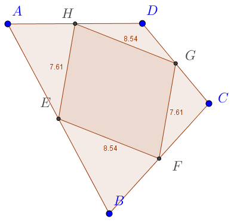
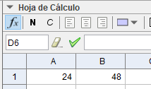

Utilización didáctica de Geogebra
Contruyamos un cuadrado
Vaya cosa más fácil, ¿no?
Depende de cómo realicemos una construcción, estaremos ante lo que pretendíamos construir... o no. Supongamos que queremos hacer un cuadrado y nos encontramos con lo siguiente:
Parece un cuadrado, ¿verdad? Tiene cuatro lados que, además, son iguales... Los ángulos son también iguales... Es más, podemos decir que su lado son 5 unidades. Todo correcto, ¿no? Pues resulta que en Geogebra, eso que muestra la figura anterior, no es un cuadrado. Si tomamos un punto cualquiera y lo desplazamos, veremos que ocurre algo similar a esto:
¡Eso no es cuadrado! ¡Hemos descubierto el engaño! Eso es debido a que para construir el «cuadrado» de la primera figura no nos hemos basado en las características esenciales de la figura a construir. Lo único que hemos hecho es disponer 4 puntos libres en la trama y unirlos con segmentos. Al ser puntos libres, se pueden desplazar como queramos, sin influir en el resto de objetos. La única restricción, si acaso, es que los segmentos dibujados siempre tienen como vértices A, B, C y D. Pero nada más.
Pero, ¿no hay una herramienta para hacer polígonos?
Sí, la hay. Usémosla para hacer nuestro cuadrado.
Qué bien ha quedado nuestro cuadrado, ¿no? Además, esta vez ha salido con un relleno sólido que le da más empaque. Veamos, lo del colorcillo es porque lo que tenemos ahora es un polígono, otro tipo de objeto distinto a los meros puntos y segmentos del apartado anterior. Sin embargo, hagamos la prueba de mover un vértice:
Nuestro gozo en un pozo, sigue pareciéndose a una cosa rara que salía en la primera de la Guerra de las galaxias... Entonces, ¿qué podemos hacer?
Un cuadrado de verdad
Pensemos un poquito sobre por qué un cuadrado es un cuadrado. Es un cuadrilátero, por lo que tiene 4 vértices y 4 lados. Sus lados son iguales y perpendiculares entre sí. Y...bueno, con eso ya es suficiente. Conste que podríamos partir de otras propiedades que solamente cumplen los cuadrados, pero con las que hemos dicho, nos vale.
- Creamos dos puntos libres, que serán A y B, y los unimos con un segmento, que será uno de los lados del futuro cuadrado.
- Utilizamos la herramienta «Recta perpendicular» para crear dos rectas perpenciculares a AB pasando por A y por B, respectivamente.
- Utilizamos la herramienta «Circunferencia (centro, punto)» para encontrar un tercer vértice. Pinchamos nuestro compás en B y lo abrimos hasta A. Al punto de corte de esa circunferencia con la recta perpendicular a AB que pasa por B, lo llamamos C. Para bautizarlo en Geogebra tenemos que crearlo. Y eso se hace con la herramienta «Intersección»
- Nos falta nuestro D, que podemos hacerlo igual que hemos hecho para C, o creando una perpendicular a AC que pasa por C y creando el punto de corte de esa recta nueva con la perpendicular a AB que pasa por A.
Ya está, ABCD es nuestro cuadrado, y si desplazamos A, sigue siendo un cuadrado:
Hemos dejado la hoja llena de objetos que ya no nos hacen falta y queríamos hacer un cuadrado, no rectas y circunferencias de regalo. Bien, es verdad, entonces basta con crear un polígono sobre A, B, C y D y ocultar todos los objetos menos ese nuevo polígono:
El archivo .ggb correspodiente puede descargarse aquí.
Algunas conclusiones sobre esto del cuadrado
Desde el punto de vista de la didáctica de la geometría, esto que acabamos de hacer con el cuadrado es esencial. Para hacer un simple cuadrado de verdad hemos tenido que reflexionar sobre qué hace que un cuadrado sea un cuadrado. Esto es, las propiedades necesarias y suficientes que ha de tener un cuadrilátero para poder ser considerado como un cuadrado.
A partir de aquí, las actividades obvias pasan por la definición de cuadriláteros y otras figuras geométricas. Si se complementa con las obligatorias reflexiones sobre lo que se está haciendo, estamos ante un recurso excelente y que, por otro lado, no tiene equivalente con lápiz y papel.
Conjeturemos
En matemáticas, la idea de conjetura es esencial y se refiere a una proposición que se supone cierta, pero que todavía no ha sido probada ni refutada. Geogebra fomenta que, con tareas adecuadas, los alumnos conjeturen.
Ejemplo 1: polígono que forman los puntos medios de un cuadrilátero
Conjetura si la siguiente afirmación es verdadera o no, de forma razonada.
Dado un cuadrilátero cualquiera, los puntos medios de los lados determinan un paralelogramo
La construcción que haríamos en primer lugar es la de un cuadrilátero libre; es decir, uno cuyos vértices fueran puntos libres. Esto lo podemos realizar directamente con la herramienta polígono o creando primero los puntos y luego el polígono sobre ellos.
A continuación, hallaremos los puntos medios de los lados. Dichos puntos ya no serán libres, y los crearemos utilizando la herramienta «punto medio». Observemos que también se podrían hallar a partir de la mediatriz (para lo que hay otra herramienta) y luego definiendo el punto como la intersección de la mediatriz y el lado.
Solamente nos falta el polígono determinado por los puntos medios (E, F, G y H).Tomamos la herramienta polígono y unimos dichos puntos.
Aquí ya podríamos empezar a tratar de conjeturar, moviendo los puntos libres que determinan los vértices del cuadrilátero original.
Si la actividad se trabaja por parejas, se tiene la oportunidad de verbalizar estas primeras conjeturas:
- Parece un rectángulo, ¿no?
- No, no, espera, si movemos esto a mí me parece un rombo...
- ...
Es un buen momento para anotar estas conjeturas en el cuaderno.
Sin embargo, solo hemos comenzado con la actividad. Parece que tenemos todo listo, pero nos falta algo más. Necesitamos más información, y para eso utilizaremos otras herramientas de Geogebra. Por ejemplo, nos puede interesar la longitud de los lados y los ángulos, ya que las clasificaciones usuales de los cuadriláteros se hacen en función de estos dos elementos. Si hacemos que la construcción muestre las distancias, podemos ver que, hagamos lo que hagamos con A, B, C y D, los lados opuestos siempre miden lo mismo. En la actividad de aula, es bueno que esto lo anoten en el cuaderno o que lo incluyan en un documento con la captura de pantalla correspondiente y señalando lo que está ocurriendo.

Bueno, parece que vamos acotando el problema. Pero para ser más exactos, vamos a mostrar también los ángulos:
Lo que observamos es que, tanto sea cóncavo como convexo el cuadrilátero original, el cuadrilátero que resulta de unir los puntos medios tiene siempre:
- Lados opuestos iguales.
- Ángulos opuestos iguales.
Por lo tanto, hagamos lo que hagamos, siempre es un paralelogramo.
Y bueno, se podría seguir tirando de la cuerda. ¿Por qué EF y HG son paralelos (y EH y FG)?
La hoja de cálculo de Geogebra
Geogebra incluye una hoja de cálculo que es muy sencilla de utilizar. Para ejemplificar su funcionamiento, pensemos en un problema de divisibilidad, en torno al concepto de mínimo común múltiplo.
El autobús que va a Cuarte y el que va a Villanueva inician sus recorridos a las siete de la mañana desde el mismo punto de partida. Si el de Cuarte tiene un servicio cada 24 minutos, y el de Villanueva cada 36 minutos, ¿a qué hora, después de las siete, vuelven a coincidir en la salida?
| Geogebra | Explicación |
|---|---|
|  | Calculemos en primer lugar cuánto tarda en volver a la salida el primer autobús. |
| Seleccionamos las dos celdas y arrastramos para que la hoja nos calcule el resto de múltiplos, que nos proporcionan los instantes en que el primer bus vuelve a la salida. | |
| Aquí tenemos todos los múltiplos de 24 que deseemos. | |
| Realizamos lo mismo para el segundo autobús e identificamos que a los 72 minutos coinciden en la salida. Es decir, una hora y doce minutos después de las siete de la mañana, a las 8:12. |